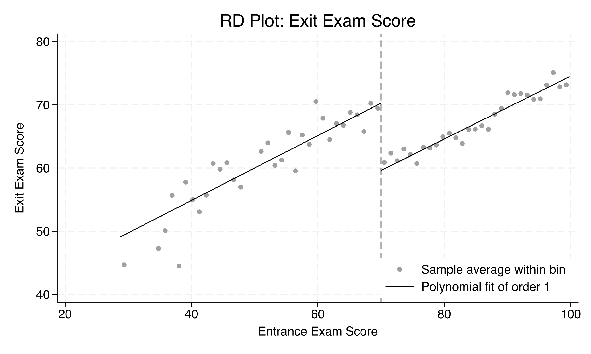
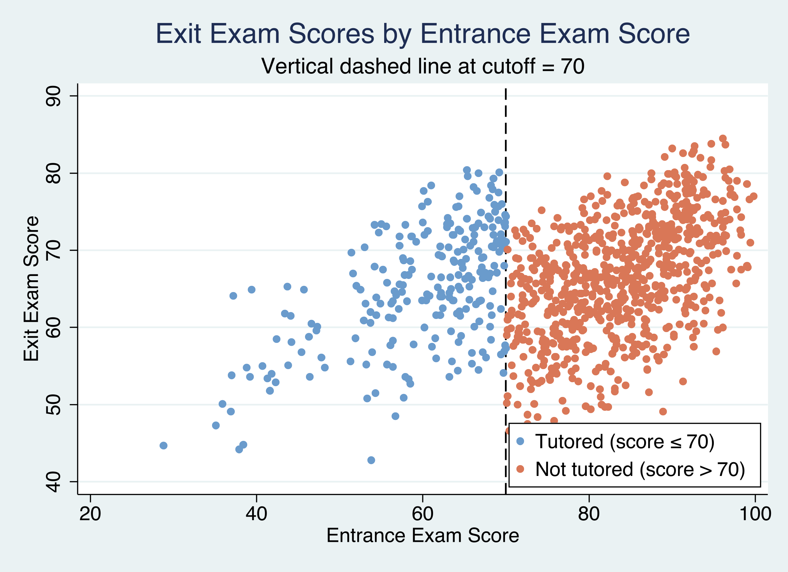
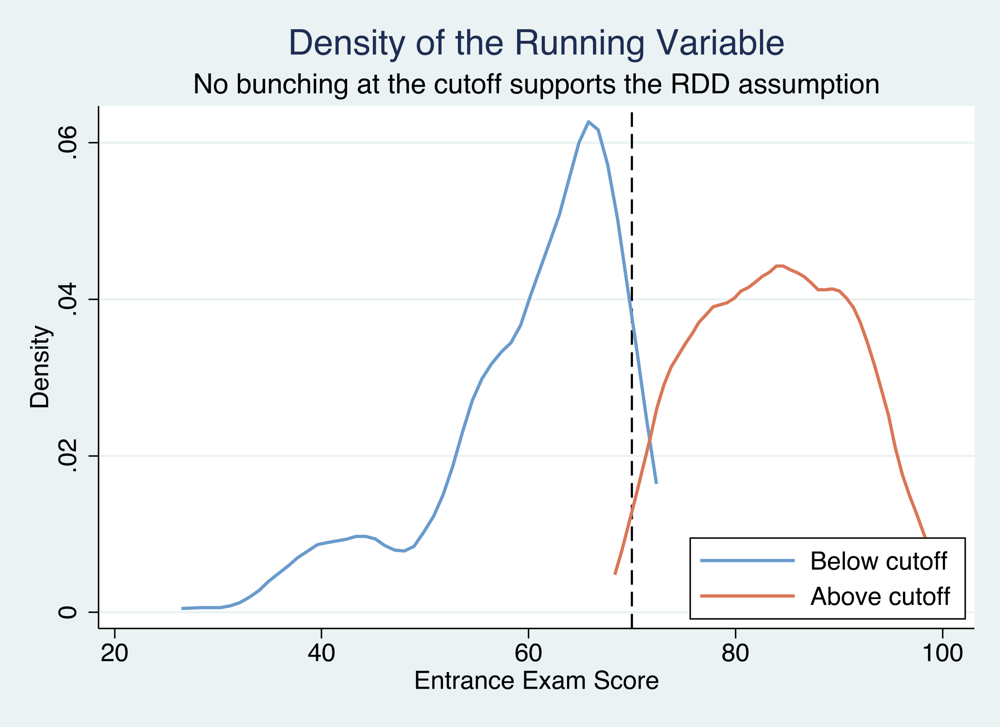
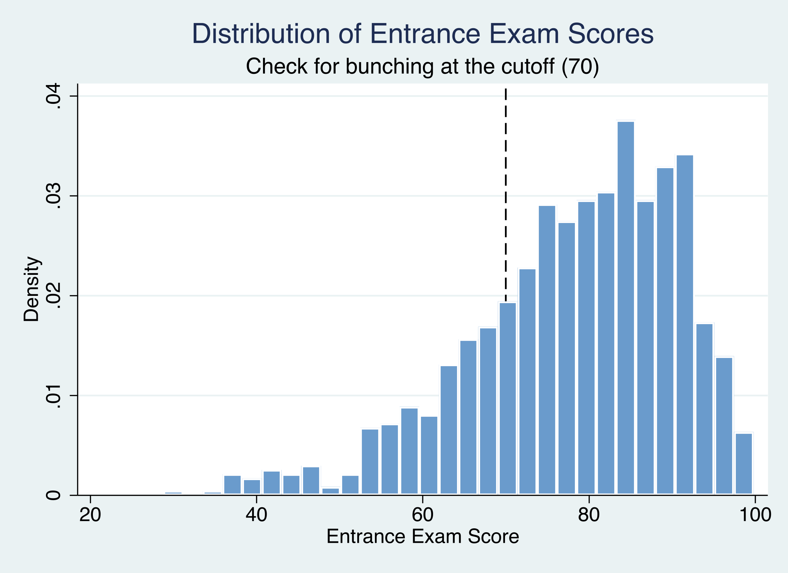
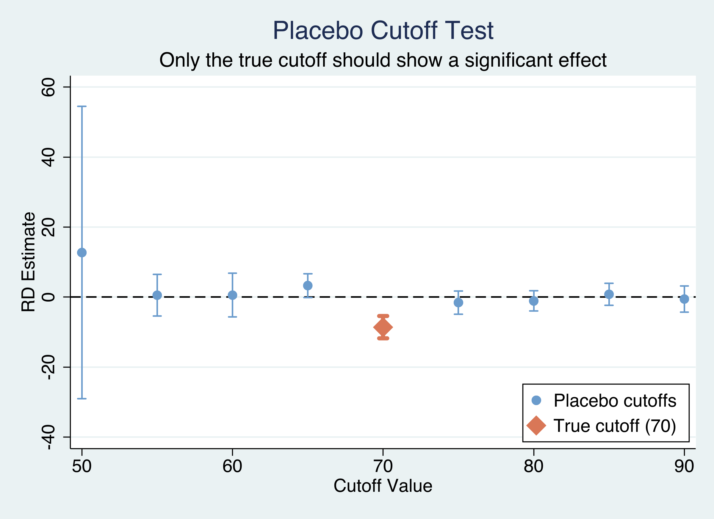

Did a rule-based tutoring program raise exit exam scores?
Nagoya University (GSID)
June 11, 2026
Act I
A school enrolled every student scoring 70 or below on an entrance exam into free tutoring. Above 70, nothing.
The struggling students who got help also started behind. Compare raw outcomes and you measure the program plus the gap it was meant to close. How do you separate the two?
A deterministic assignment rule, drawn as a flow:
Students just below and just above 70 are comparable by construction — only treatment differs.

Binned averages with local-linear fits each side of the cutoff. Moving left to right (tutored → not), exit scores drop ~8–10 points at 70.
Act II
The entrance distribution is right-skewed — most students cleared 70, so only about a quarter received tutoring.
\[\tau_{RD}=\lim_{x\downarrow c}E[Y\mid X=x]-\lim_{x\uparrow c}E[Y\mid X=x]\]
The difference between the expected exit score just above the cutoff and just below it.
Identification rests on continuity: absent tutoring, potential outcomes would pass smoothly through 70. The estimate is local — it speaks only to students near the threshold.
| Position | Not tutored | Tutored | Total |
|---|---|---|---|
| Above cutoff (\(>70\)) | 759 | 0 | 759 |
| At or below (\(\le 70\)) | 0 | 241 | 241 |
Zero crossovers in either direction — treatment is a deterministic function of the score. This is a sharp RDD, the strongest form.

Exit vs entrance scores. Blue = tutored (≤70), orange = not tutored. Dashed line marks the cutoff at 70.
\[\text{exit}_i = \beta_0 + \beta_1\,\text{entrance}_i + \tau\,\text{treat}_i + \varepsilon_i\]
The coefficient \(\tau\) is the jump at the cutoff — the treatment effect under a common linear trend.
+10.80
\(\hat\tau\) on treatment, full-sample OLS (SE 0.81, 95% CI 9.22–12.38, \(p<0.001\))
| Model | Specification | \(\hat\tau\) | SE | \(R^2\) |
|---|---|---|---|---|
| 1 | Linear, same slope | 10.800 | 0.806 | 0.268 |
| 2 | Linear, different slopes | 10.797 | 0.816 | 0.268 |
| 3 | Quadratic | 9.223 | 1.198 | 0.271 |
The interaction term is essentially zero (−0.001), and R² is flat across all three — added flexibility buys nothing.
\[\hat\tau_{RD} = \lim_{x\downarrow c} E[Y_i\mid X_i=x] - \lim_{x\uparrow c} E[Y_i\mid X_i=x]\]
Instead of one regression through 1,000 points, fit local polynomials inside a data-driven bandwidth around the cutoff.
Smaller bandwidth → less bias (more comparable units) but more variance (fewer observations). rdrobust picks the MSE-optimal \(h\) automatically.
−8.58
rdrobust RD effect (robust 95% CI −12.14 to −4.54, \(p<0.001\)); only the 400 students within ±10 of the cutoff are used
Opposite signs, identical message: tutoring raises exit scores by roughly 9–11 points at the cutoff.
Act III
| Bandwidth | \(\hat\tau\) | SE | \(p\) |
|---|---|---|---|
| 5 | −8.202 | 2.337 | <0.001 |
| 10 | −8.581 | 1.615 | <0.001 |
| 15 | −8.842 | 1.312 | <0.001 |
| 20 | −9.157 | 1.131 | <0.001 |
A spread of less than one point across a 4× change in window — the result is not an artifact of bandwidth choice.

Kernel densities of the running variable, each side of the cutoff. Similar heights at 70 → no bunching.

Distribution of entrance exam scores; vertical line at 70. The mass transitions smoothly through the threshold.

rdrobust at 9 cutoffs with 95% CIs. Only the true cutoff at 70 (orange) excludes zero; placebos straddle zero.
Objection. A data-driven bandwidth and a clever package can’t manufacture identification.
Response. Correct — and we never claim they do. The LATE is identified only under continuity of potential outcomes at 70 (no manipulation, no other policy switching on at the same score). rdrobust just estimates the discontinuity flexibly; the McCrary test and placebos defend the assumption, they don’t replace it.
| Approach | Estimate | 95% CI | \(p\) |
|---|---|---|---|
| Parametric OLS (linear) | +10.80 | 9.22 – 12.38 | <0.001 |
| Parametric OLS (quadratic) | +9.22 | 6.87 – 11.57 | <0.001 |
| Nonparametric rdrobust | 8.58 | 4.54 – 12.14 | <0.001 |
9–11 points is ~13–16% of the mean exit score (66.2) — the difference between passing and failing for a borderline student.